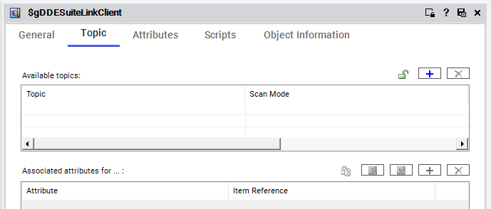

The Simulator DI object configured with Server node=SOOPROD, Server name=OI.SIM.1 — use the same pattern for ProdPLC (Module 5, page 5-10)
Source: AVEVA Application Server 2023 Training Manual, Module 5, Section 2 + Lab 9 (pages 5-7 to 5-12)
How Application Server connects to field devices through Device Integration objects — and configuring a DDE/SuiteLink client to communicate with a PLC via an OI Server.
Reference: Module 5, Section 2 (pages 5-7 to 5-8)
In Lesson 15, you learned that Application Server does not talk directly to PLCs. Instead, it uses a chain of intermediaries. Here is the complete data flow path that every piece of field data must travel:
Reference: Module 5, Section 2 (pages 5-8 to 5-9)
Every Galaxy ships with a built-in system object called $gDDESuiteLinkClient. This is the Device Integration (DI) template that you instantiate and configure to connect to each OI Server. Think of it as the Galaxy's built-in telephone — you create an instance of it, point it at the right OI Server, and it handles the conversation.
When you open the $gDDESuiteLinkClient object editor, the Topic tab is where you define the connections to your OI Server. It contains two key tables:

| Table | Purpose |
|---|---|
| Available Topics | Lists topic names and their scan mode. Each topic represents a named connection to a specific data set on the OI Server. Initially empty until you configure connections. |
| Associated Attributes | Maps Galaxy attribute references (e.g., ProdPLC.Topic1.$Sys$Status) to item addresses on the OI Server side. This is where you wire up individual data points. |
Reference: Module 5, Lab 9 (pages 5-9 to 5-12)
Reference: Module 5, pages 5-9 to 5-10
To connect to a PLC, you create a new instance of the $gDDESuiteLinkClient template. This instance becomes your dedicated communication object for a specific device.
Step 1a: In the Templates pane, expand the system templates and locate $gDDESuiteLinkClient.
Step 1b: Right-click it and select New → Instance (for a direct instance) or New → Derived Template (for a template you can customize further).
Step 1c: Name the new object ProdPLC — this object will represent your production PLC connection.
Reference: Module 5, pages 5-10 to 5-11
Open the ProdPLC object editor. The General tab has two critical settings that tell the DI object where to find the OI Server:
| Property | Simulator Value | ProdPLC Value | What It Means |
|---|---|---|---|
| Server node | SOOPROD |
S00PROD |
The hostname of the computer where the OI Server software is installed and running. |
| Server name | OI.SIM.1 |
MBTCP |
The OI Server instance name — assigned when you install/configure the OI Server on that machine. |
MBTCP for Modbus TCP, OI.SIM.1 for a simulator). This is case-sensitive.Reference: Module 5, pages 5-11 to 5-12
With the ProdPLC object configured, you need to deploy it so the runtime can begin communicating with the OI Server.
Step 3a: In the Model-Tagname view, locate the ProdPLC object.
Step 3b: Right-click it and select Deploy from the context menu.
Step 3c: Wait for deployment to complete. The object's icon should show a green indicator when successfully deployed.
Step 3d: Repeat for the Simulator object if not already deployed.
Reference: Module 5, page 5-12
After deployment, check whether the DI object has successfully connected to the OI Server by examining its diagnostic attributes:
| Attribute | Expected Value | What It Means |
|---|---|---|
ConnectionStatus |
Connected | Live connection to the OI Server is established |
Reconnect |
false | Connection is stable — no reconnection attempts in progress |
ScanState |
true | DI object is actively polling the OI Server for data |
Topic1.$Sys$Status |
true | The configured topic is active and communicating |
Reference: Module 5, page 5-12
Once connected, the DI object starts pulling live values from the PLC. Open the object and view its attributes to see real-time data:
C0:Good — value is fresh, reliable, and current. Data can be trusted.80:Uncertain — value may be stale or the communication path has intermittent issues.0:Bad — value cannot be trusted. Check the communication path.Reference: Module 5, page 5-12
Your ProdPLC DI object, like all other objects, lives within the Galaxy hierarchy. DI objects typically sit in the ControlSystem area alongside platform objects, because they represent communication infrastructure rather than physical equipment:
| Galaxy Area | Objects | Purpose |
|---|---|---|
| Plant → ControlSystem | AppEngine1, GRPlatform, ProdPlatform, ProdPLC, Simulator |
Infrastructure: engines, platforms, and DI objects |
| Plant → Production | Line1, Line2 (with contained Meters, Pumps, Mixers) |
Equipment: the actual process objects |
| Component | Role | Where It Lives |
|---|---|---|
| $gDDESuiteLinkClient | Galaxy DI object — maps attributes to PLC items via topics | Galaxy database; deployed to Platform Engine |
| OI Server | Protocol translator — bridges SuiteLink/DDE to PLC protocol | Dedicated Windows machine (the OI Server node) |
| PLC | Field device providing process data | Plant floor |
Q1: What are the four components in the data path from an Application Object to a PLC?
Application Object → DDE/SuiteLink Client → OI Server → PLC
Q2: What is the purpose of the OI Server in the communication path?
The OI Server is a protocol translator — it bridges SuiteLink/DDE communication from Application Server to the native protocol spoken by the PLC (e.g., Modbus TCP, Allen-Bradley).
Q3: What two properties must be correctly configured on a DI object for it to connect to an OI Server?
The Server node (computer name where the OI Server runs) and the Server name (the OI Server instance name, e.g., MBTCP).
Q4: What does a ConnectionStatus of "Connected" tell you?
The DI object has successfully established a live connection to the OI Server and is ready to exchange data with the PLC.
Q5: What does Quality code "C0:Good" indicate about a PLC value?
The value is fresh, reliable, and current — the communication path is healthy and the data can be trusted.
Click each answer to reveal it.
Next: Lesson 17 — Lab 10: Configuring the Device Integration Object